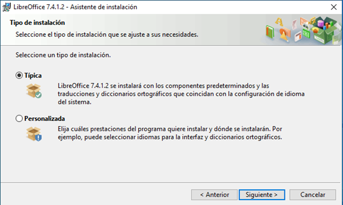
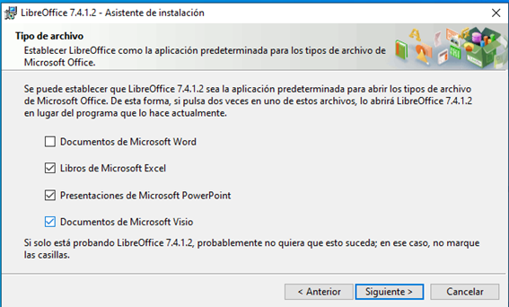
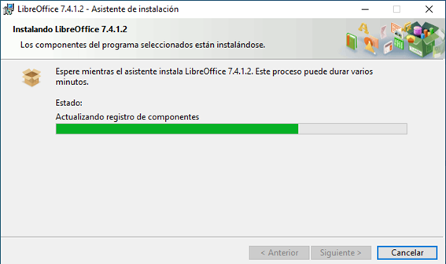

Windows
1Primer paso
Primero deberemos descargar el archivo ejecutable de la página oficial de libreoffice.
2Segundo paso
Le deberemos dar a siguiente para seguir con la instalación.

3Tercer paso
En la instalacion nos da la opcion de elegir el tipo de instalación la tipica seria la opción por defecto y la personalizada, con opciones avanzadasde instalación
4Cuarto paso
En el caso de la instalación en Windows nos dara la opcion de poner libreoffice como aplicacion predeterminada para abrir documentos word, excel, etc.
5Quinto paso
Al finalizar la instalacion estaria disponible para utilizar el paquete ofimatico libreoffice
